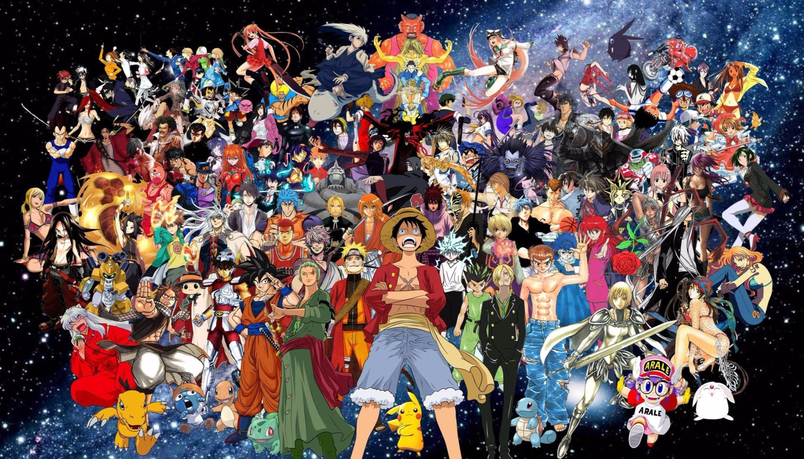

About

Anime(アニメ),is hand-drawn and computer-generated animation originating from Japan.
Outside Japan and in English, anime refers specifically to animation produced in Japan.
However,in Japan and Japanese, anime (a term derived from a shortening of the English
word animation)
describes all animated works, regardless of style or origin.
Many works of animation with a
similar style to Japanese animation are also produced
outside Japan.
Video games sometimes also
feature themes and art styles that are sometimes
labelled as anime.